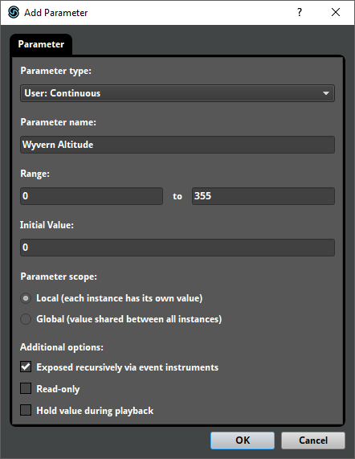
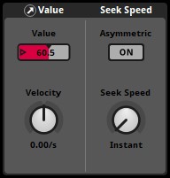
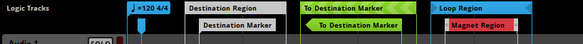
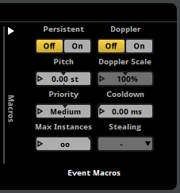
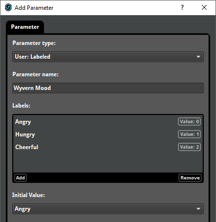
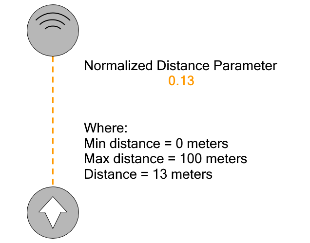

FMOD Studio User Manual 2.02
- Welcome to FMOD Studio
- FMOD Studio Concepts
- Organizing the Project
- Authoring Events
- Working with Instruments
- Managing Assets
- Parameters
- Getting Events into Your Game
- Mixing
- The Sandbox
- Editing During Live Update
- Profiling
- Dialogue and Localization
- Using Source Control
- Supporting Downloadable and User-generated Content
- Advanced Topics
- Quick Start Tutorial
- Event Macros Drawer Reference
- Instrument Reference
- Plug-in Reference
- Modulator Reference
- Parameters Reference
- Scripting
- Scripting API Reference
- Keyboard Shortcut Reference
- Troubleshooting
- Glossary
- Appendix: Celeste Getting Started Guide
- Appendix: Reaper Integration
22. Parameters Reference
A parameter is an event property that can be used to trigger and control an event's instruments, logic markers, and automatable properties, and whose value can be set by game code. This chapter describes the properties, settings, and behaviors of each type of parameter in detail.
For information about adding parameters to events and possible uses of parameters in games, please see the parameters section of the authoring events chapter and the parameters chapter.
A preset parameter has settings that can be changed in the edit parameter dialog.

The following settings are common to most preset parameters.
- Parameter Type (Dropdown menu)
- There are several different types of parameter. Each type has different behaviors, settings, and potential applications. For information about specific types of parameter, see the timeline parameters, user parameters, and built-in parameters sections of this chapter.
- Parameter Name (Text field)
- The name of a preset parameter appears in the parameters browser and on all parameters referencing that preset parameter. Multiple preset parameters may have the same name only if they are located in different folders. Your game can use the name of a local parameter instance or global preset parameter to get and set its value. For information on getting and setting the values of global preset parameters, see Studio::System::getParameterByName and Studio::System::setParameterByName in the FMOD Engine User Manual, and for information on getting and setting the values of local parameter instances, see Studio::EventInstance::getParameterByName and Studio::EventInstance::setParameterByName.
- Range (Number fields)
- Every preset parameter has a specific range of possible values. If a parameter is set to a value outside of its range, it is instead set to closest value within that range. For information about how range is defined for specific types of parameters, see the timeline parameters, user parameters, and built-in parameters sections of this chapter.
- Parameter Scope (Radio buttons)
- The scope of a preset parameter may be either local or global. The value of a global parameter is shared by every event instance that contains a parameter based on that preset. The value of a local parameter can be different in each event instance that contains a parameter based on that preset.
- Hold value during playback (Checkbox)
- The values of a parameter may be held during playback. The values of held local parameters can be set to new values only when their event instances are not playing or paused. This means you can set the held local parameters in an event instance before that instance starts, but not when it is playing. Held global parameters cannot be set to new values by your game under any circumstances.
Other properties that appear in the edit parameter dialog are specific to certain types of parameter.
Certain additional parameter properties can be viewed in a parameter's deck.

The parameter deck allows you to set a parameter's current value, as well as the preset parameter's velocity and seek speed settings.
- Velocity (Dial)
- Velocity causes a parameter's current value to continually ramp up or down at a fixed rate, until it reaches the parameter's minimum or maximum value. This allows a parameter to change value over time even without being set to a new value. Only user parameters may have velocity.
Units: Units per second. - Asymmetric (Toggle Button)
- Setting seek speed to be asymmetric allows you to specify separate "ascending" and "descending" seek speeds for a preset parameter. Ascending seek speed applies when a parameter is set to a higher value, and descending seek speed when it is set to a lower value.
- Seek Speed (Dial)
- Seek speed causes the parameter's current value to ramp up or down at a fixed rate when it is set to a new value, instead of changing instantaneously. This allows a parameter to transition smoothly from one value to another instead of changing abruptly. Setting seek speed to instant causes parameter value changes to happen instantaneously. The seek speed dial only appears in the deck if seek speed is not asymmetric.
Units: Units per second. - Ascending (Number Box)
- Ascending seek speed causes the parameter's current value to ramp up at a fixed rate when it is set to a higher value, instead of changing instantaneously. This allows a parameter to transition smoothly from one value to another instead of changing abruptly. Setting ascending seek speed to instant causes parameter value increases to happen instantaneously. The ascending number box only appears in the deck if seek speed is asymmetric.
Units: Units per second. - Descending (Number Box)
- Descending seek speed causes the parameter's current value to ramp down at a fixed rate when it is set to a lower value, instead of changing instantaneously. This allows a parameter to transition smoothly from one value to another instead of changing abruptly. Setting descending seek speed to instant causes parameter value decreases to happen instantaneously. The descending number box only appears in the deck if seek speed is asymmetric.
Units: Units per second.
When a parameter is subject to both seek speed and velocity, setting the parameter to a new value causes it to ramp to that value at the rate specified by its seek speed, then to resume moving at the rate specified by its velocity.
Every property and setting of a preset parameter is shared between all parameters based on that preset parameter.
22.1 Timeline Parameters
Unlike all other parameter types, timelines do not reference preset parameters, and cannot be created or changed with the edit parameter dialog. Timelines can contain logic markers, but cannot be used for the parameter trigger conditions of instruments or logic markers.

An event can contain no more than one timeline parameter. Timelines cannot be given names.
A timeline's minimum value is always 0. The maximum value of a timeline is based on the rightmost logic marker or instrument on that parameter. The initial value of a timeline is always 0.
Timeline parameters are always local in scope, and the value of a timeline cannot be modulated or automated.
The value of a timeline automatically advances when the event instance containing that parameter is playing, unless its current value reaches a sustain point. The rate at which a timeline advances is scaled by the event's pitch property, found in the event's macros drawer.

Your game's code can get and set the value of a timeline with Studio::EventInstance::getTimelinePosition and Studio::EventInstance::setTimelinePosition.
If a non-persistent event instance's timeline reaches its maximum value and no other content is playing in that event instance, the instance naturally ends, automatically entering the stopped play state.
22.2 User Parameters
User parameters are parameters that can be customized to represent any variable in your game. Unlike built-in parameters and timeline parameters, they do not update automatically, and must be set by your game's code or adjusted by automation or modulators. If a user parameter is used by a referenced event, a control for that parameter is included in the deck whenever an event instrument that references that event is selected.
The following settings are common to preset user parameters, and can be changed in the edit parameter dialog.
- Initial Value (Text field or dropdown menu)
- Every user parameter has an initial value to which it is set by default. Each global parameter is set to its initial value when the FMOD Studio system is initialized by your game. Each new instance of a local parameter is set to the parameter's initial value upon being created.
- Exposed recursively via event instruments (Checkbox)
- Parameters that are exposed recursively are implicitly added to the parent events of any referenced events in which the parameter is present. If a parameter is present in both a referenced event and that event's parent, those parameters automatically share the same value unless the parameter property of the event instrument is automated. This allows you to set the value of a parameter in a referenced event by setting it in the parent event. Parameters that are not exposed recursively are not implicitly added to the parent event, but may be manually added to the parent event, or otherwise controlled by automation or modulators in that parent event. This property only appears for local parameters, as global parameters can be set regardless of the events in which they are present.
- Read-only (Checkbox)
- A read-only parameter's value cannot be set by your game's code, but can still be controlled by automation and modulation. Setting a parameter to be read-only makes it easier to tell which parameters are supposed to be set by game code when auditioning events in FMOD Studio.
22.2.1 Continuous User Parameters
Continuous user parameters use floating point (decimal) numbers.
Each continuous parameter has a minimum and a maximum value that defines its range, and can be set to any floating point value within that range.
The initial value of a continuous parameter may be any floating point number within its range.
22.2.2 Labeled User Parameters
Labeled user parameters use strings (labels) instead of numerical values. The labels of a labeled parameter can be viewed and edited in the edit parameter dialog.
- Labels (Label browser)
- Each labeled parameter has a predefined list of labeled values that constitutes its range, and can be set to any value within in that range.

The range of a labeled parameter is automatically derived from its labels, and is always 0 to n, where n is the index of its last label. The value associated with each label can be viewed in the edit parameter dialog.
The initial value of a labeled parameter may be any label within its range.
22.2.3 Discrete User Parameters
Discrete user parameters use integer (whole) numbers.
Each discrete parameter has a minimum and maximum value that defines its range, and can be set to any integer value within that range.
The initial value of a labeled parameter may be any integer number within its range.
22.3 Built-in parameters
Built-in parameters are parameters whose values automatically update based on the 3D attributes of the event instance and listener in your game engine.
When auditioning in FMOD Studio, you can alter the auditioning event instance's 3D attributes by moving the event instance in the 3D preview tool, or by changing the values of its built-in parameters in the editor.
Built-in parameters are always local in scope.
For information about adding parameters to events, please see the parameters section of the authoring events chapter.
For the purposes of setting event instance positions and listener positions in your game's code, FMOD Studio uses the 3D Cartesian coordinate system, with the x and z axes used to describe the horizontal plane, and the x and y axes used to describe the vertical plane.
For more information about how 3D attributes are set in your game's code, see Studio::EventInstance::set3DAttributes and Studio::System::setListenerAttributes in the FMOD Engine User Manual.

Below is the legend for all diagrams used in this section.

22.3.1 Distance
The distance parameter type represents the distance between the listener and the event instance. It uses the same units of distance as the game engine.

Each distance parameter has a minimum and maximum value, and is automatically set to the distance between the event instance and the nearest listener. This range can be customized. At value 0 the event instance is closest to the listener. A higher value represents greater distance.
When auditioning in the event editor window, moving the event instance in the 3D preview towards or away from the listener changes the value of the event's distance parameter.
Note that the game's distance factor, set by the distancefactor property in System::set3DSettings, does not have any effect on the distance calculated for a distance parameter. The calculated distance is based on the units used when setting the position of the listener and the event instance.
22.3.2 Distance (Normalized)
The distance (normalized) parameter type represents the distance between the listener and the event instance. Unlike the distance parameter type, the distance (normalized) parameter type does not use the same units of distance as the game engine, and does not have a settable minimum and maximum value. Instead, it ranges from 0 to 1, where 0 represents the minimum distance property of an event that uses the parameter, and 1 represents the maximum distance property of that event.
Each distance (normalized) parameter is automatically set to a value corresponding to the distance between the event instance and the nearest listener. If the distance in game distance units between the event instance and the emitter is less than or equal to the event's minimum distance property, the distance (normalized) parameter is set to 0; if the distance in game distance units is greater than or equal to the event's maximum distance property, the distance (normalized) parameter is set to 1; and if the distance in game distance units is between the event's minimum and maximum distance, the distance (normalized) parameter is set to (d-i)/(a-i), where d is the distance between the event instance and the nearest listener in game units, i is the event's minimum distance property, and a is the event's maximum distance property.
When auditioning in the event editor window, moving the event instance in the 3D preview towards or away from the listener changes the value of the event's distance (normalized) parameter.
Note that the game's distance factor, set by the distancefactor property in System::set3DSettings, does not have any effect on the distance calculated for a distance parameter. The calculated distance is based on the units used when setting the position of the listener and the event instance.

22.3.3 Direction
The direction parameter type is the angle between the direction the listener is facing and the direction from the listener to the event instance, in degrees. Direction parameters work with the listener's horizontal plane.

A direction parameter has a minimum value of -180 and maximum value of 180, and is automatically set to the angle between the direction the listener is facing and the direction from the listener to the event instance on the horizontal plane. 0° is positioned directly in front of the listener, -180° or 180° is positioned directly behind, -90° is positioned to the left of the listener, and 90° is positioned to the right of the listener.
Direction parameters differ from event cone angle parameters in that event cone angle measures the angle between the direction the event instance is facing and the direction from it to the listener. In addition, direction parameters only take into account the relative positions of the listener and event instance on the listener's horizontal plane, whereas event cone angle parameters also take into account elevation.
When auditioning in the event editor window, moving the event instance in the 3D preview around the listener changes the value of the direction parameter.
22.3.4 Elevation
The elevation parameter type is the angle between the direction the listener is facing and the direction from the listener to the event instance on the vertical (xy) plane, in degrees.

Each elevation parameter has a minimum value of -90 and maximum value of 90, and is automatically set to the angle between the plane formed by the listener's forward and left vectors (noted as the "listener's horizontal plane") and the vector between the listener and the event instance. At 0° is when the listener's horizontal plane matches the vector between the listener and the event instance. At 90° is when the listener's horizontal plane is directly below the vector between the listener and the event instance (ie. the event instance is above the listener), and at -90° is when the listener's horizontal plane is directly above the listener (ie. the event instance is below the listener). Elevation does not take into consideration whether the listener is looking at the event instance.
An elevation parameter can be used in situations where it is important that event instances sound different if above or below the listener, such as when a player is in a World War I-era biplane.
When auditioning in the event editor window, moving the event instance in the 3D preview above or below the listener changes the value of the elevation parameter. You can do this by holding onto the Ctrl key and dragging the event instance.
22.3.5 Event Cone Angle
The event cone angle parameter type is the angle between the direction the event instance is facing and the direction from it to the listener, in degrees.

An event cone angle parameter has a minimum value of 0 and maximum value of 180. Each is automatically set to the absolute value of the angle between the direction the event instance is facing and the direction from the event instance to the listener. At 0°, the event instance faces towards the listener and at 180° the event instance faces away from the listener.
Event cone angle parameters differ from direction parameters in that direction parameters measure the angle between the direction the listener is facing and the direction from the listener to the event instance. In addition, direction parameters only take into account listener's horizontal plane, whereas event cone angle parameters also take into account elevation.
Some events represent objects that emit sound in a non-spherical manner. For example, televisions or megaphones tend to project sound more loudly in one direction than in others. This parameter type can be used to define how such events behave. It is often used to define the size and shape of the emission cone for an event.
When auditioning in the event editor window, rotating the event instance in the 3D preview changes the value of the event cone angle parameter.
22.3.6 Event Orientation
The event orientation parameter type is the angle between the direction the listener is facing and the direction the event instance is facing, in degrees.

An event orientation parameter has a minimum value of -180 and maximum value of 180. Each is automatically set to the angle between the direction the listener is facing and the direction the event instance is facing, as measured on the horizontal plane. If both the listener and instance are facing the same direction, the angle is 0°. As the listener and the event instance turn to face opposite directions, the angle will increase toward a maximum of 180°. The event orientation parameter only takes into account orientation on the horizontal plane (xz).
The event orientation parameter is useful when an event represents a sound that surrounds the listener instead of coming from a single point source, such as a wind ambience that sounds different depending on which way the listener faces relative to the wind direction.
When auditioning in the event editor window, rotating the event instance in the 3D preview changes the value of the event orientation parameter. Rotating the listener in the sandbox window will also change the value of the event orientation parameter.
22.3.7 Speed (Relative)
The speed (relative) parameter type represents the speed of the event instance relative to the listener. It is measured in units of distance per second, and uses the same units of distance as the game engine.
Each speed parameter has a minimum value of 0 and a maximum value, and is automatically set to the speed at which the event instance is moving relative to the listener. When the event instance is moving at the same velocity and in the same direction as the listener, the value of the speed parameter is zero. Higher values represent greater differences in velocity. For example, if the listener is moving at a rate of 1 unit/second and the event instance is moving in the opposite direction at a rate of 10 units/second, the value of the speed parameter is 11.
The range of a speed parameter can be customized. The maximum value of a speed parameter must be greater than its minimum value, and its minimum value cannot be less than zero.
The 3D preview tool and sandbox do not alter the value of speed parameters when auditioning events.
22.3.8 Speed (Absolute)
The speed (absolute) parameter type represents the speed of the event instance relative to the empty space it is moving through. It is measured in units of distance per second, and uses the same units of distance as the game engine.
Each speed parameter has a minimum value of 0 and a maximum value, and is automatically set to the speed at which the event instance is moving relative to the 0, 0, 0 position in the system of 3D coordinates used in your game. When the event instance's position is not changing, the value of the speed (absolute) parameter is zero, whereas higher values represent greater velocities. For example, if the event instance is moving at a rate of 4 units/second, the value of the speed (absolute) parameter is 4.
The speed and direction of the listener have no impact on the speed (absolute) of events.
The range of a speed parameter can be customized. The maximum value of a speed parameter must be greater than its minimum value, and its minimum value cannot be less than zero.
The 3D preview tool and sandbox do not alter the value of speed parameters when auditioning events.